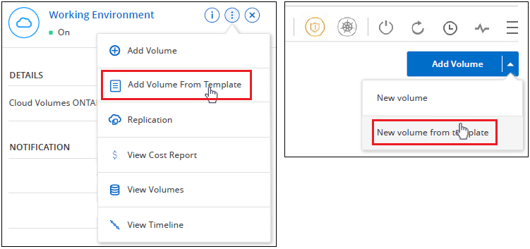
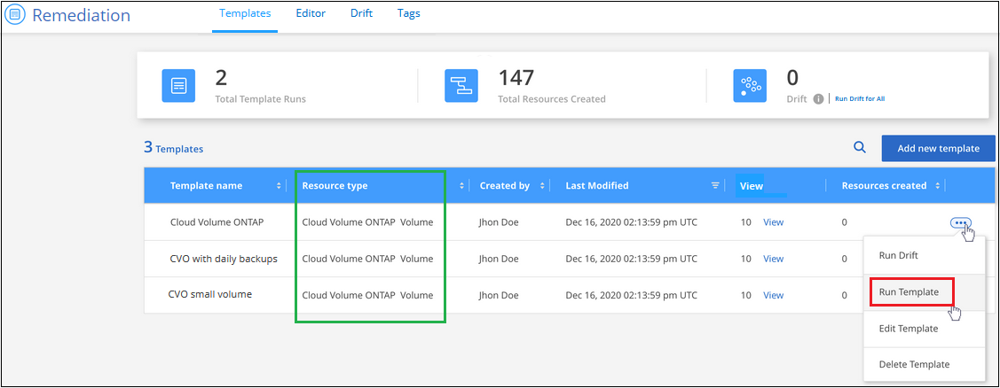

Get started
Get started
Create or modify resources using templates
 Suggest changes
Suggest changes
Select one of the application templates that your organization has built to create working environments or volumes that are optimized for specific workloads and applications. Templates also enable you to activate BlueXP backup and recovery, BlueXP classification, and BlueXP replication on the created volumes, or on existing volumes.
Templates enable you to create volumes for Cloud Volumes ONTAP, Azure NetApp Files, and on-premises ONTAP systems.
Quick start
Get started quickly by following these steps, or scroll down to the remaining sections for full details.
 Verify required prerequisites
Verify required prerequisites-
Before you can create a volume for a Cloud Volumes ONTAP, on-premises ONTAP, or Azure NetApp Files system using a template, make sure you have access to an appropriate working environment where the volume will be deployed.
-
If the template activates a cloud service on the volume, such as BlueXP backup and recovery or BlueXP classification, ensure that the service is active and licensed in your environment.
 Launch the Application Templates service
Launch the Application Templates serviceSelect Health > Remediation and click the Templates tab.
 Build the resource by running the template and defining parameters
Build the resource by running the template and defining parametersSelect the template, click Run Template, and enter values in the editable fields to create the resource.
Requirements
Read the following requirements to make sure that you have a supported configuration.
-
If you don't already have a Connector, see how to create Connectors for AWS, Azure, and GCP.
-
When creating a Cloud Volumes ONTAP volume, make sure you have a Cloud Volumes ONTAP working environment available.
-
When creating an on-premises ONTAP volume, make sure you have an on-premises ONTAP working environment available.
-
When creating an Azure NetApp Files volume, make sure you have an Azure NetApp Files working environment available.
-
If the template activates a cloud service on the volume, such as BlueXP backup and recovery, BlueXP classification, or BlueXP replication, ensure that the service is active and licensed in your environment.
Select and run a volume template
There are multiple ways to select and run a template to create new volumes:
-
Run the volume template from the working environment
-
Run the volume template from the Templates dashboard
Regardless of the method you choose, the details about the required volume parameters that you must define are available in these sections:
Run a volume template from the working environment
You can add a volume to an existing working environment from the Working Environment page and from the Volume Details page.
-
From the Working Environment page or from the Volume Details page, click Add Volume From Template.

The Templates Dashboard is displayed and it lists only those templates that are applicable to the selected working environment — for example, it only shows Cloud Volumes ONTAP templates.
-
Click
 and Run Template.
and Run Template.
The Add Volume from Template page appears.
-
Enter values in the editable fields to create the volume and click Run Template.

Run a volume template from the Templates Dashboard
You can add a volume to an existing working environment from the Templates Dashboard.
-
Select Health > Remediation and click the Templates tab.
The Templates Dashboard is displayed.
-
For the template that you want to use, click
and Run Template.
The Run Template page appears.
-
Enter values in editable fields to create the volume and click Run Template.

Note that when you run the template from the dashboard that you need to select the working environment and other variables (for example, the storage VM and/or aggregate). When you run the template from the working environment, the working environment gets filled in automatically.
Select and run a working environment template
You can create a new working environment from the Templates Dashboard if your company has created a template for this functionality.
If you have any questions about the details required to create the working environment, see Launching Cloud Volumes ONTAP in AWS.
-
Select Health > Remediation and click the Templates tab.
The Templates Dashboard is displayed.
-
For the template that you want to use, click
and Run Template.
The Run Template page appears.
-
Enter values in editable fields to create the working environment and the first volume and click Run Template.

Select and run a template that finds existing resources
You can run a template that finds certain resources (for example, volumes), and then enables a cloud service on those resources (for example, BlueXP backup and recovery), if your company has created a template using this functionality. When running the template, you can make some minor adjustments so that you apply the cloud service only to the appropriate resources.
-
Select Health > Remediation and click the Templates tab.
The Templates Dashboard is displayed.
-
For the template that you want to use, click
and Run Template.
The Run Template page appears and immediately runs the search that was defined in the template to find the volumes that match the criteria.
-
View the list of returned volumes in the Volume Results area.

-
If the results are what you expected, select the checkbox for each volume that you want to have BlueXP backup and recovery enabled using the criteria from the Enable Cloud Backup on Volume part of the template and click Run Template.
If the results are not what you expected, click
 next to Search Criteria and refine the search further.
next to Search Criteria and refine the search further.
The template will run and it will enable BlueXP backup and recovery on each volume that you checked from the search criteria.
Any error will be called out in the Running your Template page, and you can resolve the issues if needed.